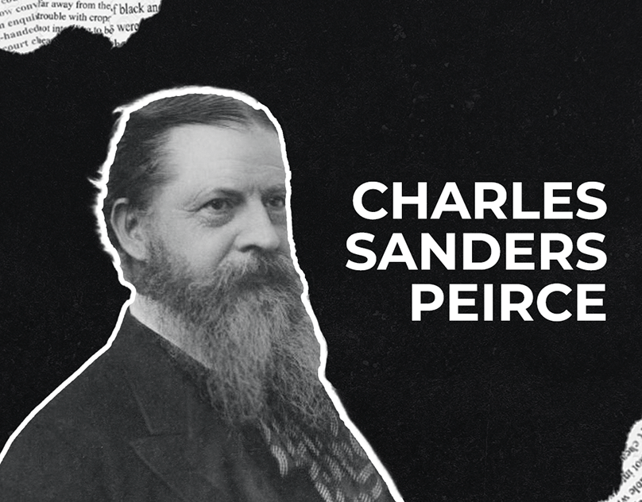
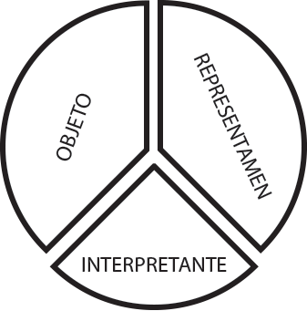

ESPAÑOL
Descubre obras literarias, análisis profundos y recursos del Bachillerato Internacional. Una carpeta digital completa para el programa de Lengua y Literatura Española en UWC Costa Rica.
Recursos
Materiales y herramientas para el estudio de Lengua y Literatura
Guías del Bachillerato Internacional
Material oficial del IB para el programa de Lengua y Literatura en español.
Documentos principales:
- Guía de Lengua A: Literatura (2021)
- Criterios de evaluación interna y externa
- Ejemplares de trabajos con comentarios
Galería de Recursos
📁 Imagen 1
Arrastra imagen aquí
📁 Imagen 2
Arrastra imagen aquí
📁 Imagen 3
Arrastra imagen aquí
📁 Imagen 4
Arrastra imagen aquí
📁 Imagen panorámica
Imagen de ancho completo
Apuntes
Notas de clase y resúmenes teóricos
Módulo 1: El Lenguaje Introducción a la Lingüística
Ferdinand de Saussure y el Estructuralismo: Propone una nueva concepción de los hechos del lenguaje, considerándolos como un sistema en el cual los diversos elementos que lo integran ofrecen entre sí una relación de solidaridad y dependencia tal que forman una estructura.
Términos Fundamentales
- Significado: Idea de la cosa; la idea que se nos viene a la cabeza cuando decimos una palabra, aquello a lo que nos estamos refiriendo dentro de nuestro mundo real cuando hablamos.
- Significante: La palabra en sí misma; conjunto de signos lingüísticos (fonemas y morfemas) que usamos para poder comunicarnos con el resto de las personas. El significante es la herramienta que usamos de forma verbal o escrita para poder remitir una idea, un concepto a la persona que recibirá (el receptor) la información.
- Lengua: Es el código constituido por signos lingüísticos y reglas de combinación, es decir, el sistema (abstracto).
- Habla: Es un acto particular (concreto) materializado por el emisor que cifra un mensaje utilizando el código lingüístico, esto es, el sistema.
- Sincronía: Se refiere al estudio de la lengua en su estado actual.
- Diacronía: Se refiere al estudio de la lengua desde una perspectiva histórica y evolutiva.
- Lingüística Interna: Estudia las lenguas en sí mismas.
- Lingüística Externa: Se encarga de estudiar el componente social de las lenguas.
- Relaciones Sintagmáticas: Son las que se dan en el discurso; las palabras se ordenan en forma lineal ya que no existe la posibilidad de pronunciar dos elementos a la vez. Estas combinaciones se denominan sintagmas.
- Relaciones Paradigmáticas: Son las que se establecen entre unidades alternantes, es decir, entre los signos que podrían aparecer en un mismo lugar de un enunciado. Para que dos o más signos puedan alternar, esto es, ocupar el mismo puesto del mensaje, deben pertenecer a la misma categoría.
Módulo 2: Semiótica y Semiología
Ciencia que trata de los sistemas de comunicación dentro de las sociedades humanas, estudiando las propiedades generales de los sistemas de signos, como base para la comprensión de toda actividad humana. Aquí, se entiende por signo un objeto o evento presente que está en lugar de otro objeto o evento ausente, en virtud de un cierto código.
La RAE los considera sinónimos, no obstante, los intelectuales que estudian los signos establecen diferencias conceptuales.

Charles Sanders Peirce (1839-1914)
El Representamen (o Signo en Sí):
Una manifestación material y perceptible que representa a otro objeto. Idea de la cosa; la idea que se nos viene a la cabeza cuando decimos una palabra, aquello a lo que nos estamos refiriendo dentro de nuestro mundo real cuando hablamos.

El Objeto: Aquello representado, esto es, aquello de lo que el signo da cuenta.
El Interpretante: O sentido que el signo produce y que se traduce en otro signo o representamen.

Tipos de Signos (Clasificación General)
Icónicos o Iconos: Cuyo significante guarda una relación de parecido con su objeto o referente (ej.: mapas, caricaturas, croquis).
Indicios o Indicadores: Cuyo significante guarda una relación natural o de causa-efecto con el objeto o referente (ej.: el humo como signo de fuego, el llanto como signo de emoción intensa).
Símbolos: Aquellos signos en los que la relación significante y objeto o referente no es de semejanza ni natural o de causa-efecto, sino arbitraria, convencional, pactada en el seno de una sociedad.
Semiótica y Tecnología
Se distinguen dos líneas: una enfocada al discurso social y otra a lo visual.
La cercanía con la comunicación de masas se ha afianzado gracias a tecnologías en artes audiovisuales,
lo que obliga a estudiar signos en informática e inteligencia artificial. Esto podría exigir una unificación entre lenguaje coloquial y nuevas tecnologías,
colaborando en el entendimiento de relaciones entre sociedades.
Semiótica del Discurso Social
Se encarga de estudiar el proceso a través del cual los medios de comunicación de masas llegaron a
integrarse a la cultura de la sociedad, produciendo diversas tipologías en los discursos
Tipos de Signos según Umberto Eco (1932-2016)
Según el Intérprete:
- Signos Humanos: Las palabras, la música, la pintura, las señales de tránsito, etc.
- Signos No Humanos: La danza de las abejas, las feromonas sexuales entre los animales, el rugido de un león, el gruñido de un perro, etc.
Según el Ámbito en que se dan:
- Signos Naturales: La capacidad de significar procede de la naturaleza misma del significante. Normalmente se consideran también signos naturales los signos involuntarios y los no intencionales (ej.: el humo como efecto del fuego, la fiebre, el olor a sudor, el llanto, la Estrella Polar, una huella en el suelo, todos los signos no humanos).
- Signos Culturales: Son producto de la creación cultural del hombre y, por lo tanto, implican una intencionalidad sígnica de parte del emisor y una actividad decodificadora por parte de un destinatario. Estos signos constituyen códigos. También reciben el nombre de signos artificiales o convencionales.
Según su Relación con lo Significado (Referente) (Siguiendo a Peirce):
- Iconos: Relación basada en la semejanza figurativa o exterior (ej.: un cuadro realista, una imagen, una fotografía, un mapa, un diagrama). Un signo icónico alude con precisión a un solo referente.
- Índices (o Signos Deícticos): Apuntan físicamente a su objeto, con conexión físico-espacial (ej.: indicar con el dedo; expresiones como yo, tú, él, acá, allá; también signos naturales como el humo, la fiebre).
- Símbolos: Relación arbitraria y convencional (ej.: las banderas, el papel moneda, la balanza como símbolo de la justicia, la paloma como símbolo de la paz, el color blanco como símbolo de la pureza, la gran mayoría de las palabras).
Trabajos en Clase
Actividades y ejercicios realizados durante el curso
Ensayos y Análisis
Colección de trabajos escritos durante las clases.
Investigación Personal
Proyectos de investigación individual
Proyecto de Investigación
Investigación profunda sobre un tema literario específico.
La Divina Comedia
Dante Alighieri – Análisis y reflexiones
Contexto Histórico y Literario
Temas principales:
- Soledad: Como condición existencial de los Buendía
- Tiempo cíclico: La historia que se repite
- Realismo mágico: Fusión de lo real y lo fantástico
- Macondo: Microcosmos de América Latina
Personajes clave:
José Arcadio Buendía: Fundador de Macondo, obsesionado con la ciencia.
Úrsula Iguarán: Matriarca que vive más de 100 años.
Aureliano Buendía: Coronel que participa en 32 guerras civiles.
Recursos Visuales
🖼️ Línea de tiempo narrativa
Hombres en Escabeche
Análisis literario
Descripción
blablabla.
Temas centrales:
- Represión: De la sexualidad, la libertad
- Honor: Obsesión por las apariencias
- Autoridad: Figura tiránica
- Identidad: Condición humana
La Guerra del Fuego
(Quest for Fire, 1981), dirigida por Jean-Jacques Annaud.
¿Cómo sustituye el cine prehistórico el lenguaje verbal por un sistema de signos no verbales?
Es una película francesa sin diálogos que narra la odisea de una tribu prehistórica en busca del fuego, elemento vital para su supervivencia. Ambientada hace 80,000 años, la cinta usa un lenguaje corporal, ruidos primitivos y gestos para construir su narrativa. Ganadora del Premio César a Mejor Película y el Óscar a Mejor Maquillaje, es un ejemplo clave de obra no literaria por su uso del lenguaje visual, sonoro y simbólico como sistema de comunicación.
Signos No Verbales según Umberto Eco:
Signos Icónicos:
- El fuego como ícono por su representación directa de calor, luz y vida.
- Los mamuts como íconos de fuerza y peligro.
Signos Índices:
- El humo como índice de fuego (relación causa-efecto).
- Las heridas como índices de violencia y supervivencia.
Signos Símbolos:
- El fuego como símbolo de civilización, conocimiento y poder.
- La risa de Ika (tribu avanzada) es símbolo de humanidad emergente.
El Arquetipo del Héroe
Camino del Héroe (Joseph Campbell)
Etapas del viaje:
- Mundo Ordinario: Tribu Ulam vive con fuego heredado.
- Llamada a la Aventura: Pierden el fuego y deben buscarlo.
- Cruzando el Umbral: Naoh, Gaw y Amoukar salen de la cueva.
- Pruebas: Ataque de lobos, mamuts, caníbales.
- Gran Prueba: Aprender a hacer fuego con Ika.
- Recompensa: Dominio del fuego.
- Retorno con el Elixir: Regresan con fuego y conocimiento.
La Guerra del Fuego es un ejemplo magistral de obra no literaria que utiliza la semiótica visual y corporal para narrar el origen de la civilización. Sin palabras, comunica ideas complejas sobre lenguaje, cultura y humanidad.
Sueño en Otro Idioma
Película mexicana de 2017, dirigida por Ernesto Contreras.
¿Cómo la pérdida de un idioma como el zikril limita la comprensión de conceptos únicos en la cosmovisión indígena?
El zikril no es un mero código — es el interpretante de una cosmovisión donde el lenguaje moldea la percepción del mundo del "Encanto". Su extinción genera un nuevo sentido: la lengua como límite del entendimiento humano.
Lenguaje y Comunicación
Lengua vs. Habla (Saussure):
- Lengua: El zikril como sistema abstracto con reglas únicas que encapsulan una cosmovisión.
- Habla: Actos concretos de Evaristo e Isauro, donde el silencio es un "habla" no verbal.
Relaciones Sintagmáticas y Paradigmáticas:
- Sintagmáticas: Secuencias en zikril cargadas de significado cultural.
- Paradigmáticas: Alternativas lingüísticas (zikril vs. español).
Sueño en Otro Idioma es un ejemplo profundo de obra no literaria que usa el cine para explorar cómo el lenguaje, como cosmovisión, limita nuestro entendimiento del mundo.
Si el lenguaje moldea nuestra realidad, ¿qué mundos perdemos con cada idioma extinto?
Actividad Experiencial 1
Descripción y reflexión de la actividad
Descripción de la Actividad
[Escribe aquí la descripción de la actividad experiencial 1]
Objetivos:
- Objetivo 1
- Objetivo 2
- Objetivo 3
Reflexión:
[Escribe aquí tu reflexión sobre la actividad]
Registro Fotográfico
📸 Foto 1
Arrastra imagen aquí
📸 Foto 2
Arrastra imagen aquí
📸 Foto 3
Arrastra imagen aquí
📸 Foto 4
Arrastra imagen aquí
🖼️ Imagen principal / Banner
Actividad Experiencial 2
Descripción y reflexión de la actividad
Descripción de la Actividad
[Escribe aquí la descripción de la actividad experiencial 2]
Objetivos:
- Objetivo 1
- Objetivo 2
- Objetivo 3
Reflexión:
[Escribe aquí tu reflexión sobre la actividad]
Registro Fotográfico
📸 Foto 1
Arrastra imagen aquí
📸 Foto 2
Arrastra imagen aquí
📸 Foto 3
Arrastra imagen aquí
📸 Foto 4
Arrastra imagen aquí
🖼️ Imagen principal / Banner
Actividad Experiencial 3
Descripción y reflexión de la actividad
Descripción de la Actividad
[Escribe aquí la descripción de la actividad experiencial 3]
Objetivos:
- Objetivo 1
- Objetivo 2
- Objetivo 3
Reflexión:
[Escribe aquí tu reflexión sobre la actividad]
Registro Fotográfico
📸 Foto 1
Arrastra imagen aquí
📸 Foto 2
Arrastra imagen aquí
📸 Foto 3
Arrastra imagen aquí
📸 Foto 4
Arrastra imagen aquí
🖼️ Imagen principal / Banner
Extended Essay
Monografía de investigación
Pregunta de Investigación
[Escribe aquí tu pregunta de investigación]
Estructura:
- Introducción
- Metodología
- Desarrollo
- Conclusión
- Bibliografía
Oral: La Guerra del Fuego
Exposición oral individual sobre obra no literaria
Oral La Guerra del Fuego
Análisis oral de obra no literaria: La Guerra del Fuego (Quest for Fire, 1981).
Aspectos analizados:
- Semiótica visual y signos no verbales
- El arquetipo del héroe de Joseph Campbell
- El fuego como símbolo de civilización
- Lenguaje corporal como sistema comunicativo
Material de Presentación
🖼️ Slide de cierre / conclusión
Oral: Del Latin al Italiano
Exposición oral sobre evolución lingüística
Exposición del Latin al Italiano
Análisis oral sobre la evolución del latín al italiano y su impacto en la literatura y el lenguaje.
Aspectos analizados:
- Evolución fonética del latín
- Transformaciones gramaticales
- Influencias culturales en la lengua
- Conexión con La Divina Comedia de Dante
Material de Presentación
🖼️ Slide de cierre / conclusión
.jpg)